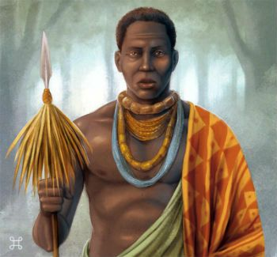
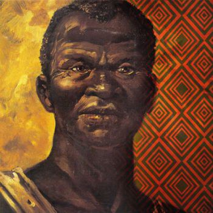

O Quilombo dos Palmares foi muito mais do que um simples esconderijo. Ele representou a maior e mais duradoura resistência contra a escravidão nas Américas.
Para entender melhor a primeira parte dessa trajetória, que vai desde o seu surgimento até a sua consolidação, precisamos olhar para a organização inicial e para a liderança de Ganga Zumba.
O Início e a União dos Mocambos: A história de Palmares começou no final do século XVI, por volta de 1590.
Nessa época, os primeiros escravizados fugiram dos engenhos de açúcar de Pernambuco e Alagoas para a Serra da Barriga. O que começou como pequenos grupos isolados logo se transformou em uma rede de povoados conhecidos como Mocambos.
O nome “Palmares” vem da grande quantidade de palmeiras na região. Essas palmeiras forneciam alimento e matéria-prima para os habitantes.
A Confederação de Palmares: Muitas pessoas acham que Palmares era uma única aldeia, mas na verdade era uma união de vários mocambos. Um desses mocambos era o de Cerca Real do Macaco, que era o principal e o centro político.

A era de Ganga Zumba: O primeiro grande líder documentado de Palmares foi Ganga Zumba. Ele é frequentemente descrito como um “rei” que governou Palmares no seu auge de estabilidade. Durante o seu comando, o quilombo atingiu uma população estimada entre 20 mil e 30 mil habitantes.
Algumas características importantes do governo de Ganga Zumba incluem:
Diplomacia: Ele não era apenas um guerreiro, mas um político que buscava manter a autonomia de Palmares através de negociações.
Estrutura Hierárquica: O quilombo funcionava como um Estado africano no Brasil, com chefes locais respondendo ao poder central de Ganga Zumba.
Resistência às Incursões: Durante este período, Palmares sobreviveu a dezenas de ataques, tanto de tropas portuguesas quanto de holandeses.
O Ponto de Inflexão, o acordo de 1678: Este evento marcou o fim da primeira fase de Palmares e gerou a transição para a era de Zumbi. Após décadas de conflito, o governador da Capitania de Pernambuco, Aires de Souza e Castro, propôs um tratado de paz a Ganga Zumba.
O Tratado de Cucaú: A proposta era o seguinte, os palmarinos teriam liberdade e terras na região de Cucaú, desde que parassem de aceitar novos escravizados fugidos e devolvessem aqueles que não tivessem nascido no quilombo. Ganga Zumba aceitou o acordo, acreditando que traria paz ao seu povo.
No entanto, uma grande parte dos quilombolas, liderada por seu sobrinho Zumbi, considerou o acordo uma traição. Eles não aceitavam a liberdade “concedida” enquanto outros africanos continuavam escravizados.
Essa divisão interna marcou o fim da hegemonia de Ganga Zumba e o início da liderança de Zumbi, focada na resistência total e militarizada.
